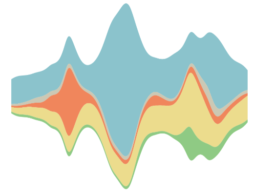
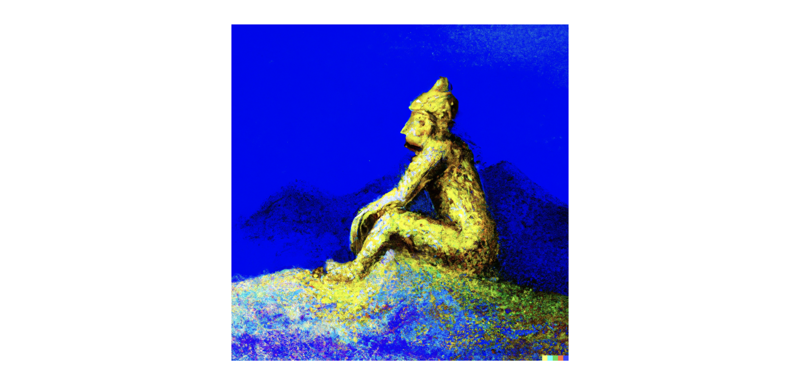
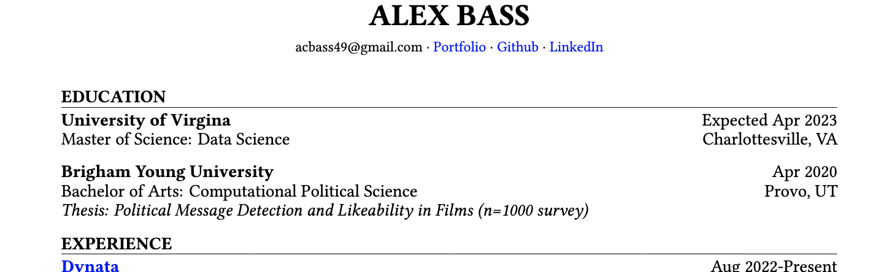

alexbass.me
About
Projects
Blog
CV
Categories
All
(12)
CICD
(2)
Commentary
(1)
Data Journalism
(8)
Google Trends
(2)
LDS
(3)
Life Hacks
(3)
Politics
(3)
Quarto
(3)
R
(5)
Shiny
(1)
Survey Research
(2)
My Blog
My Path: Social Science to Data Science
Life Hacks
Commentary
Oct 20, 2023

Primary Nomination Tracking with Google Trends and Stream Graphs
Google Trends
Data Journalism
Politics
CICD
Oct 4, 2023
Updating Quarto Post Daily with GitHub Actions
CICD
Quarto
Sep 7, 2023
Alternative to Google Analytics for Quarto Folks
Life Hacks
Quarto
Jul 6, 2023
Google Trends Can Measure Discrimination?
Data Journalism
Google Trends
Politics
Jun 27, 2023

Myth of Latter-day Saint Prosperity
Data Journalism
LDS
R
Feb 7, 2023

Resume Template with Quarto and LaTeX
Life Hacks
Quarto
Sep 2, 2022
7 Facts You May Not Know About Latter-Day Saints
Survey Research
Data Journalism
LDS
Mar 3, 2022
My Facebook Data… EXPOSED
Data Journalism
R
Apr 10, 2021
Latter-Day Saints: Growing Pains In The GOP
Data Journalism
R
Survey Research
LDS
Politics
Dec 9, 2020
Ford, Toyota, Honda? Who Takes the Cake?
Data Journalism
R
Jul 10, 2020
Mobility in the COVID-19 Era: Urban vs. Rural
Data Journalism
R
Shiny
Jun 9, 2020
No matching items